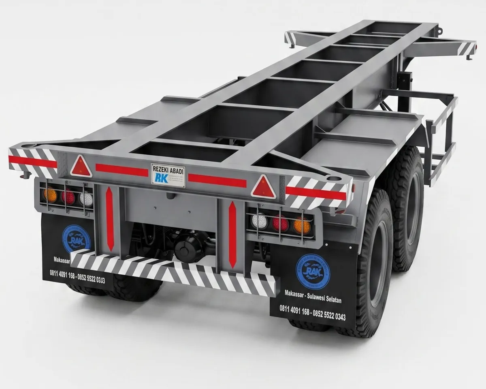
20 Feet Rangka
Rangka terbuka untuk kontainer 20 feet. Ringan dan lincah.
2 axle (tandem)
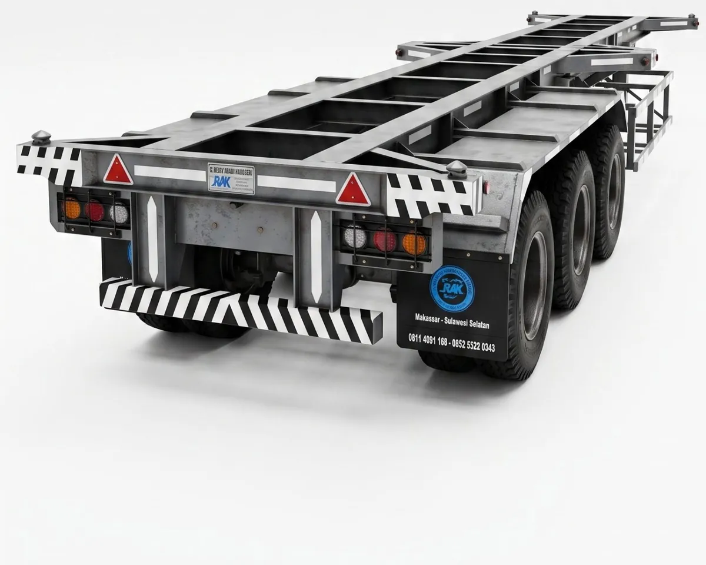
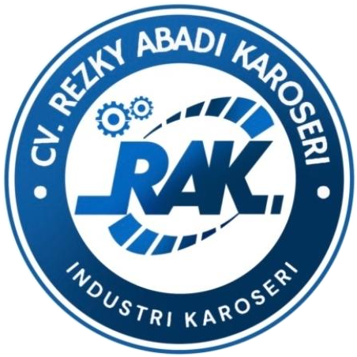
CV. Rezky Abadi Karoseri
Industri karoseri dari Makassar
Tersedia kelas Medium Duty dan Heavy Duty. Pilih kekuatan yang sesuai dengan beban kerja armada Anda.
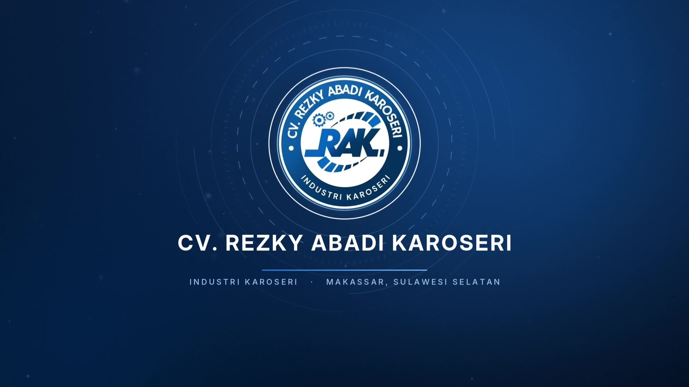
CV. Rezky Abadi Karoseri adalah industri karoseri dari Makassar. Kami memproduksi trailer container 20 dan 40 feet, tipe rangka maupun plat, langsung dari bengkel kami sendiri.
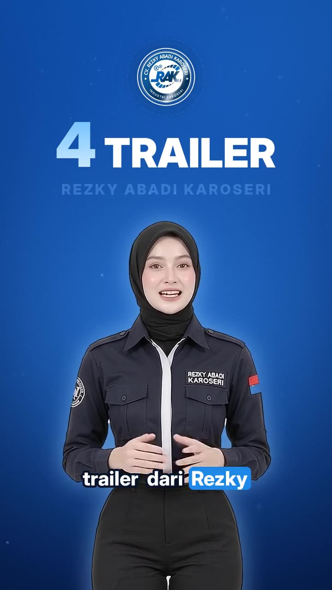

Rangka terbuka untuk kontainer 20 feet. Ringan dan lincah.
2 axle (tandem)
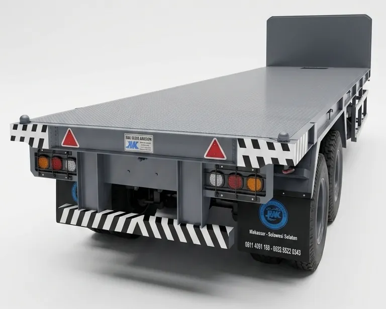
Lantai plat bordes untuk kontainer, alat berat, dan material proyek.
2 axle (tandem)
Rangka panjang untuk kontainer 40 feet, beban lebih merata.
3 axle (tri-axle)
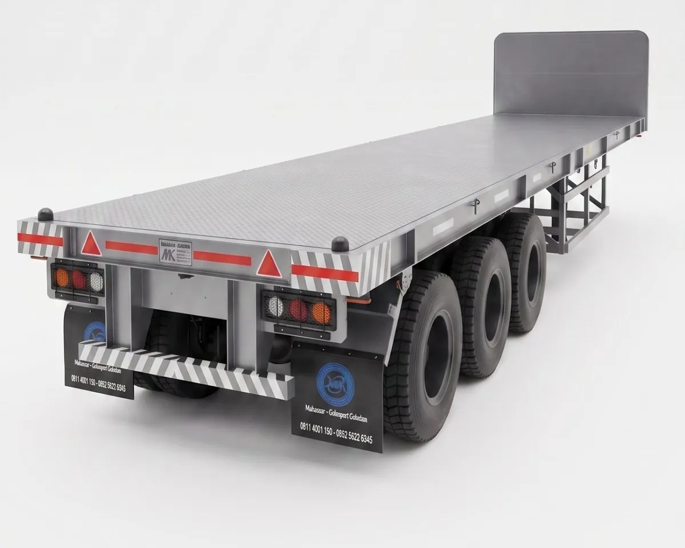
Dek plat bordes 40 feet untuk muatan panjang dan berat.
3 axle (tri-axle)
14 ton
Kapasitas axle
16 ton
Kapasitas axle
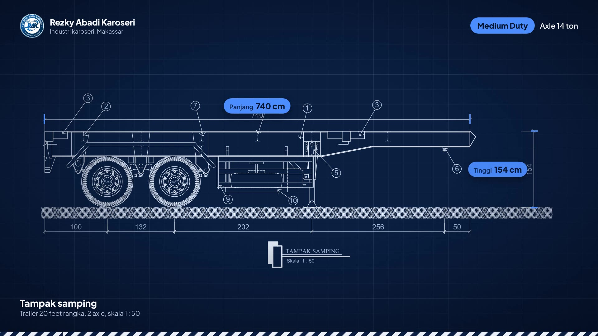
| Tipe trailer | Sampai Velg | Ban Vulkanisir | Ban Asli |
|---|---|---|---|
| 20 Feet Rangka | Rp163.500.000 | Rp181.600.000 | Rp201.750.000 |
| 20 Feet Plat | Rp180.500.000 | Rp198.600.000 | Rp218.750.000 |
| 40 Feet Rangka | Rp225.500.000 | Rp251.650.000 | Rp280.750.000 |
| 40 Feet Plat | Rp262.500.000 | Rp288.650.000 | Rp317.750.000 |
Harga dapat berubah sewaktu-waktu. Konfirmasikan harga terbaru sebelum memesan.
*Sudah termasuk 1 velg untuk ban serep
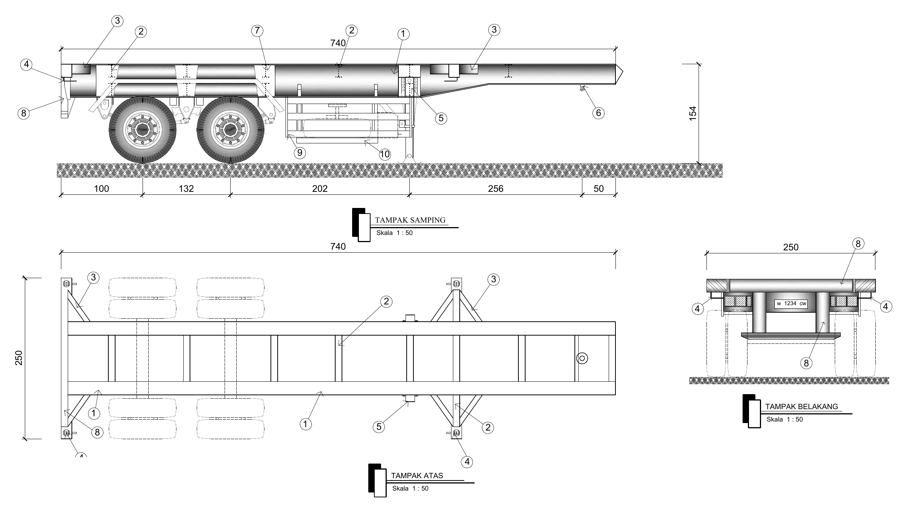
Keterangan gambar
2 axle, skala 1 : 50
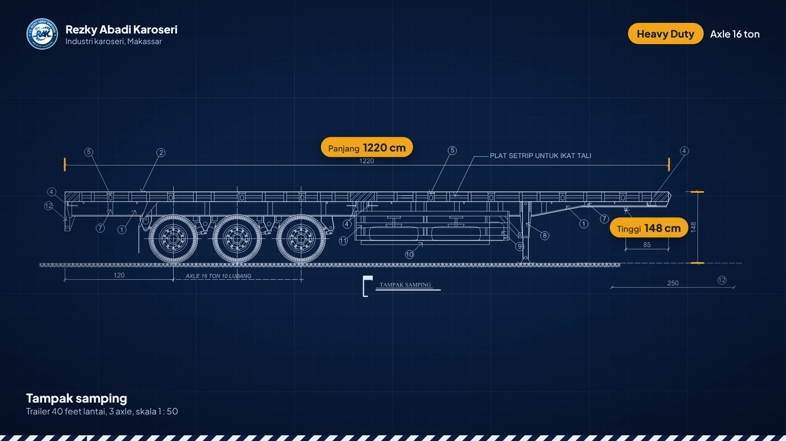
16 ton
Kapasitas axle, velg 10 lubang
WF 500
Chasis (mainframe)
Harga sesuai penawaran. Hubungi kami untuk detail Heavy Duty.
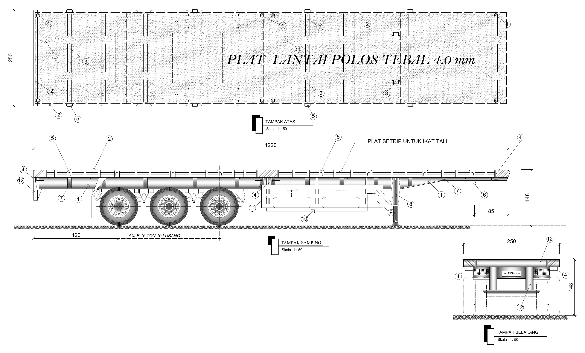
Keterangan gambar
3 axle, skala 1 : 50
1
20 feet atau 40 feet, sesuai kontainer dan panjang muatan Anda.
2
Rangka untuk kontainer. Plat untuk kontainer, alat berat, dan material proyek.
3
Medium Duty dengan axle 14 ton, atau Heavy Duty dengan axle 16 ton untuk muatan lebih berat.
4
Sampai velg, ban vulkanisir, atau ban asli. Pilih dari 14 warna.
Belum yakin? Tim kami siap membantu menentukan kombinasi yang tepat untuk armada Anda.
Tersedia untuk semua tipe trailer, sesuai permintaan Anda.
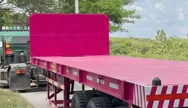
Pink Fuchsia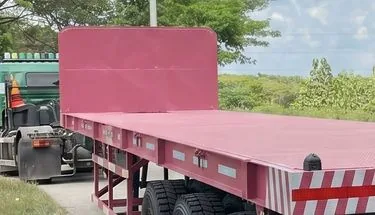
Pink Dusty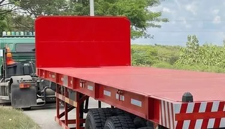
Merah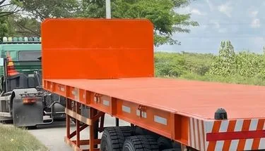
Oranye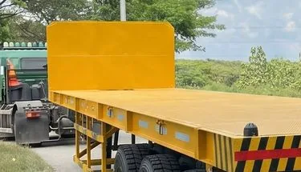
Kuning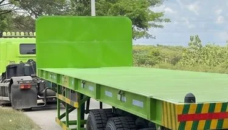
Hijau Lime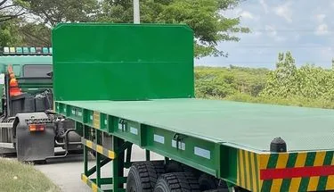
Hijau Daun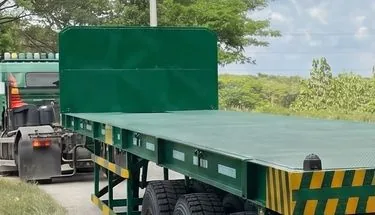
Hijau Botol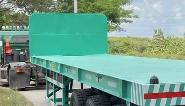
Hijau Mint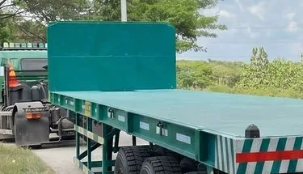
Hijau Toska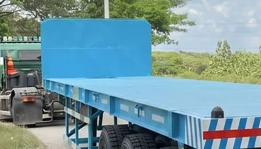
Biru Langit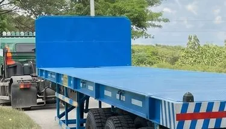
Biru Royal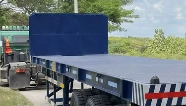
Biru Dongker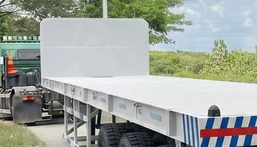
PutihWarna final dapat sedikit berbeda dari layar karena kondisi cahaya saat pemotretan. Konsultasikan pilihan warna dengan admin kami.
Tiga bulan, tiga kali kunjungan perawatan. Tim kami datang langsung ke lokasi Anda.
Kingpin dan kaki penyangga diberi grease.
Saat trailer sudah bekerja keras, supaya tidak cepat aus.
Semua titik dicek ulang dan dilumasi, supaya trailer siap jalan.
Khusus wilayah Makassar.
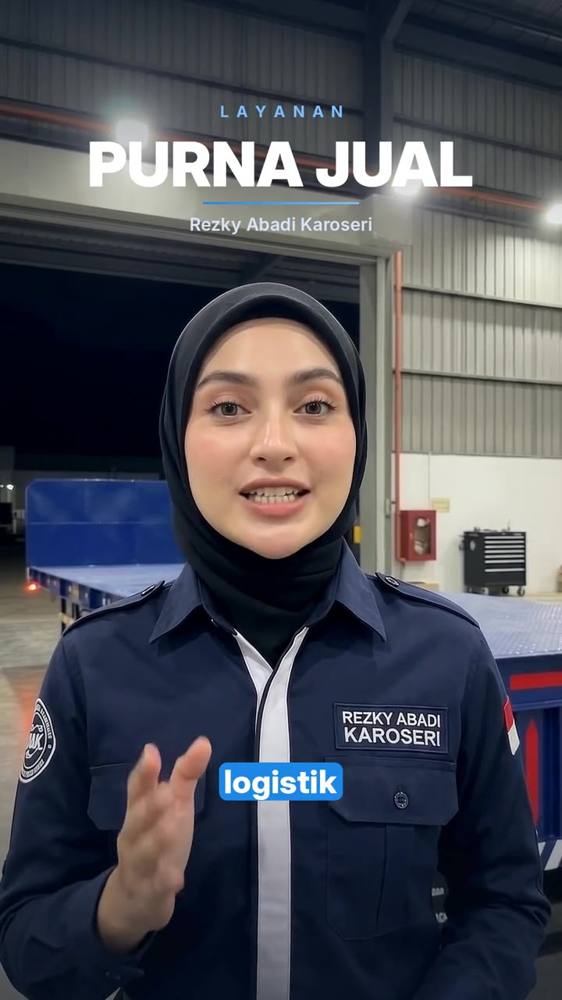
Kingpin adalah titik sambung antara trailer dan piringan (fifth wheel) di kepala truk.
Kingpin yang oblak membuat sambungan tidak aman, dan truk harus berhenti untuk perbaikan.
Saran kami
3 kali dalam 3 bulan
Grease kingpin secara rutin supaya tidak cepat aus.
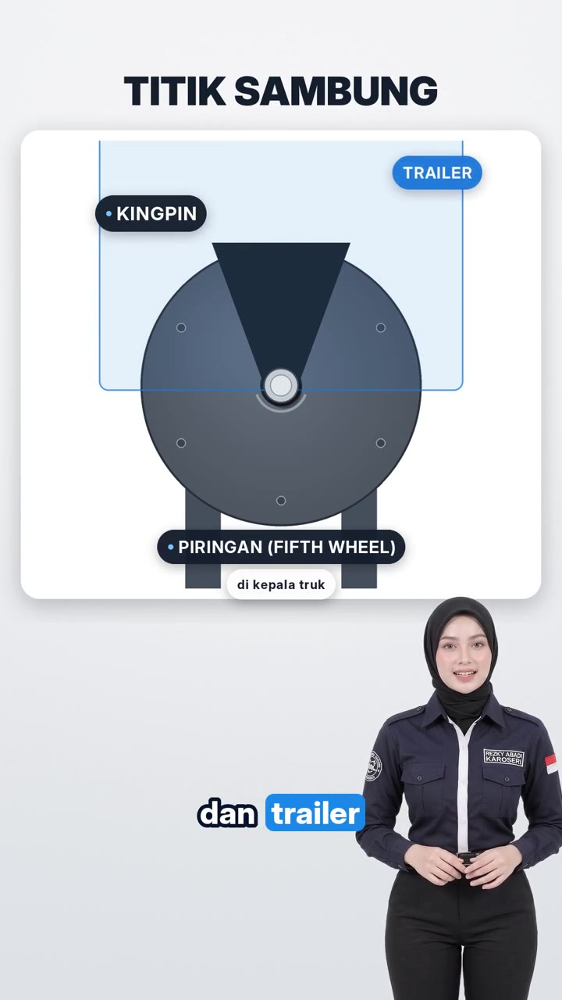
50%
Uang muka (DP) dari total harga
± 3 minggu
Waktu pengerjaan per unit
HJBridge
Merek sparepart yang kami gunakan
Velg baru sudah termasuk 1 untuk ban serep. Harga dapat berubah sewaktu-waktu.
CV. Rezky Abadi Karoseri
Hubungi kami untuk penawaran, kunjungan ke bengkel, atau pertanyaan seputar trailer.
Jl. Carawali, Temmapaduae, Kec. Marusu, Kabupaten Maros, Sulawesi Selatan 90552
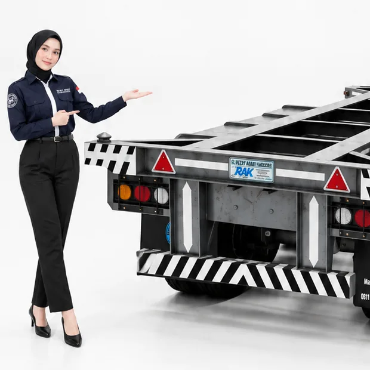
Sekarang
Berikutnya
Putar HP ke posisi mendatar untuk tampilan penuh